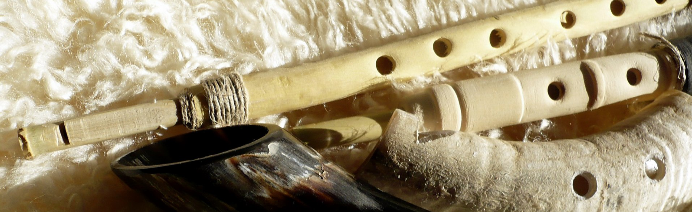

Subject index
Home > Subject index
This index gathers Instrumentarium content by instrumental families, sound-production principles, documented traditions, and research clusters. Each subject connects books, notes, and sketches that remain separated in the site's chronological and editorial sections.
Andean ensembles and sound practices
Instruments, ensembles, festive calendars, and collective ways of producing sound in the Andes.
Instruments: Andean bass drum · Andean transverse flute · Andean whistle · Charango · Chirimía of Cauca · Double flute · Erkencho · Gaita of Cajamarca · Kamacheña · Long Andean trumpet · Mohoceño · One-handed flutes · Panpipe · Pinkillo · Quena · Scissors of the Scissors Dance · Siku · Tarka · Traditional violin · Waqra phuku
Books
Notes
Sketches
Additional materials in Spanish
Bowed chordophones
Instruments whose strings are activated by friction, including local fiddles and monochords.
Instruments: Hathpang · Mbiké · Orellana’s arrabel · Scissors of the Scissors Dance · Traditional violin
Bullroarers
Rotating blades whose movement produces a hum, used as ritual objects, signals, and toys.
Instruments: Bullroarer
Notes
Double flutes
Aerophones formed by two simultaneously sounded tubes with melodic or drone functions.
Instruments: Double flute · Gaita of Cajamarca
Notes
Duct flutes
Flutes in which a duct directs the breath toward the edge, in both internal and external forms.
Instruments: Buxíxh · External-duct flutes · Natïraixh · Tyopïx · Wax-head flute · Yoresoma · Yoresóx
Notes
Sketches
Additional materials in Spanish
Friction drums
Instruments whose membrane vibrates through friction transmitted by a rod, cord, or other element.
Instruments: Furro
Notes
Historical sources and organological documentation
Chronicles, treatises, images, records, and descriptive problems that shape what is known about instruments.
Instruments: Andean transverse flute · Chirimía of Cauca · Deer-eye rattles · Hathpang · Kamacheña · Mbiké · One-handed flutes · Orellana’s arrabel · Panpipe · South American clarinets
Notes
Additional materials in Spanish
Instruments and animal materials
Instruments made from shells, skulls, bones, horns, hooves, and other animal materials.
Instruments: Animal-skull instruments · Deer-eye rattles · Panpipe · Turtle shell · Waqra phuku
Sketches
Additional materials in Spanish
Instruments of the Ava people
Instruments documented among the Ava people of Bolivia and Argentina.
Instruments: Añáchi · Angúa guásu · Angúa rái · Iguaéru · Michi rái · Pinguyo · Serére · Temímby guásu · Temímby púku · Temímby ye piása · Turúmi · Wakaránty · Yandúgua · Yvýra mímby · Yvýra nambichái
Sketches
- The añáchi of the Ava people
- The angúa guásu of the Ava people
- The angúa rái of the Ava people
- The idiophones of the Ava people
- The michi rái of the Ava people
- The pinguyo of the Ava people
- The temímby guásu of the Ava people
- The temímby púku of the Ava people
- The temímby ye piása of the Ava people
- The turúmi of the Ava people
- The wakaránty and the iguaéru of the Ava people
- The whistles of the Ava people
Instruments of the Chiquitano people
Instruments documented among the Chiquitano people of the Bolivian lowlands.
Instruments: Buxíxh · Natïraixh · Sananáx · Tyopïx · Yoresoma · Yoresóx
Instruments of the Guaporé River
Instruments and musical practices documented among societies of the Guaporé River region.
Additional materials in Spanish
Musical archaeology
Instruments, images, and sounding spaces preserved in archaeological contexts.
Instruments: Huari whistling bottle · Lithophone · Panpipe · Quena
Musical bows
Chordophones derived from the bow and distributed across South America.
Instruments: Musical bow
Additional materials in Spanish
One-handed flutes
Flutes played with one hand, commonly together with a drum played by the same musician.
Instruments: Kamacheña · One-handed flutes
Books
Additional materials in Spanish
Panpipes
Sets of ordered tubes sounded across their open ends, in American and other traditions.
Instruments: Panpipe · Siku · Turtle shell
Pinkillos, tarkas, and Andean duct flutes
Duct flutes associated with Andean consorts, agricultural cycles, and ritual calendars.
Instruments: Mohoceño · Pinkillo · Tarka
Additional materials in Spanish
Quenas and notch flutes
Open vertical flutes whose edge is formed by a notch in the upper rim.
Instruments: Kamacheña · One-handed flutes · Quena
Rattles and shakers
Shaken or suspended instruments sounded by the collision of moving elements.
Instruments: Deer-eye rattles · Yandúgua · Yvýra nambichái
Sketches
Recordings, repertories, and circulation
Processes through which repertories and instruments are recorded, rearranged, and turned into recognizable sonic signs.
Instruments: Andean bass drum · Banda mocha horn · Caña de millo · Charango · Furro · Quena · Siku
Additional materials in Spanish
Sikus and sikuri bands
Altiplano panpipes and ensembles based on collective and complementary performance.
Additional materials in Spanish
Struck idiophones
Objects whose own bodies vibrate when struck, including lithophones, shells, and metal pieces.
Instruments: Lithophone · Panpipe · Scissors of the Scissors Dance · Traditional violin · Turtle shell
Traditional clarinets
Single-reed aerophones, with particular attention to South American idioglot forms.
Instruments: Caña de millo · Erkencho · South American clarinets · Traditional clarinets
Books
Transverse flutes
Side-blown flutes, with particular attention to traditional Andean forms.
Instruments: Andean transverse flute · Chirimía of Cauca
Notes
Trumpets and horns
Lip-vibrated aerophones, from short horns to long natural trumpets and multiple trumpet sets.
Instruments: Bajón · Banda mocha horn · Iguaéru · Long Andean trumpet · Sananáx · Wakaránty · Waqra phuku
Notes
Additional materials in Spanish
Wax-head flutes
Flutes whose mouthpiece or head uses wax to form or adjust the duct and edge.
Instruments: Wax-head flute
Additional materials in Spanish
Whistles and whistling vessels
Whistles, bottles, and sounding vessels in traditional and archaeological contexts.
Instruments: Andean whistle · Huari whistling bottle · Serére · Yvýra mímby
Notes
Sketches
Additional materials in Spanish